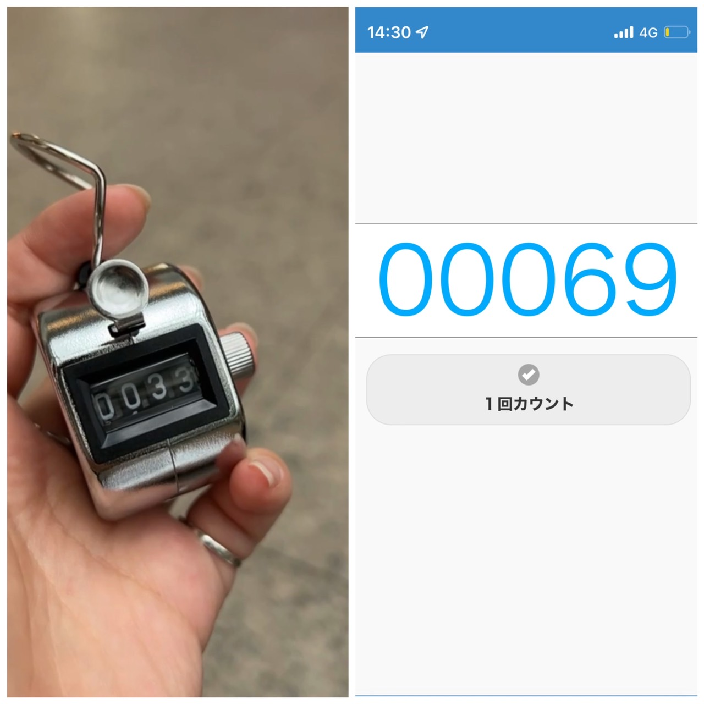
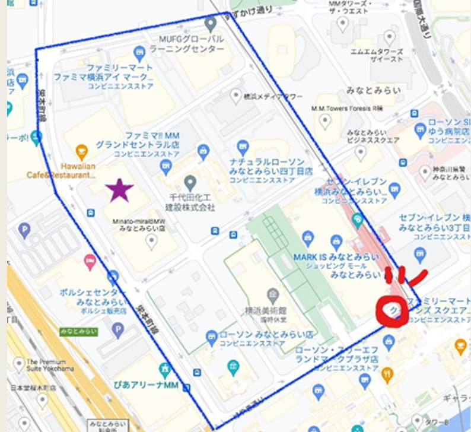
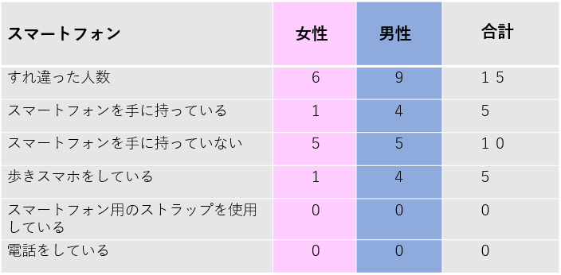
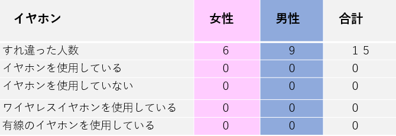
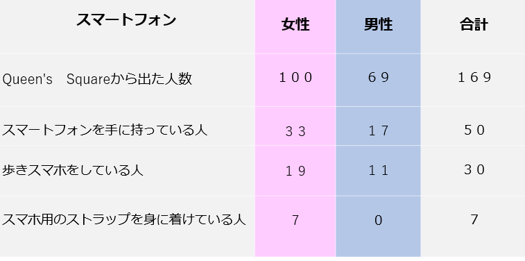
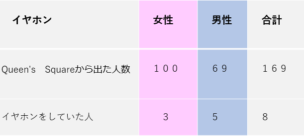

第３回観察
観察対象
⇒スマホとイヤホン
観察の焦点
携帯を手に持っている人の数と性別
歩きスマホをしている人の数と性別
スマホのストラップを使用している人の数と性別
イヤホンをつけている人の数と性別
クイーンズスクエアを出た人の総数と性別
観察方法：移動観察と定点観察
観察日：2022年10月18日（火曜日）
天気：曇り

観察に使ったものは数取器と携帯。
数取器とカウンターWebというサイトを併用して4人で担当を分担してそれぞれの人数を性別に分けて数えた。
カウントWeb
～移動観察～

以下の青色の線の道を通って移動観察を行った。
移動時間:13:20~13:30
スマートフォンにより撮影した動画
移動観察結果
スマートフォン

イヤホン

～定点観察～
観察場所：Queen's Squareの出入口
定点観察の時間：14:00~14:30
定点観察結果
Queen's Squeareを出た人の総合人数
スマートフォン

イヤホン

まとめ
全体的に女性のほうがスマートフォンを手に持っていた。
歩きスマホ含め予想よりもスマートフォンを手に持っている人、イヤホンをしている人が少なかった。
考えられる理由⇒30代以上の人が多く、時間帯が若者が学校などでいない時間だったためというのと、2人以上の人が多く、スマートフォンを使用するよりも会話が多かったためだと考えられる。
イヤホンに関しては有線の人は必ず手にスマホを持っており、無線の人は持っていなかった。
反省
性別だけをみるだけでなく、年齢層、服装、イヤホンのメーカーなどにも注目してみるとより面白いことがわかるかもしれない。
～おわり～